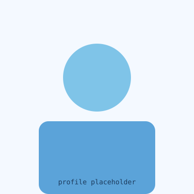

Tentang Saya

perkenalan
Halo, saya Muhammad Arifin.
Saya mahasiswa Program Studi Sistem Informasi di Universitas Bina Sarana Informatika, saat ini menempuh semester 6 dengan IPK 3.51. Ketertarikan saya bercabang ke dua arah yang saling melengkapi: bagaimana sebuah aplikasi terlihat dan terasa nyaman digunakan (UI/UX Design), serta bagaimana data di baliknya disusun agar tetap rapi, aman, dan cepat diakses (Database Administration).
Bagi saya, desain yang baik bukan cuma soal tampilan—tapi juga soal fondasi data yang menopangnya. Karena itu saya senang mengerjakan proyek dari dua sisi sekaligus: merancang wireframe sekaligus menyusun skema basis data yang menjadi dasarnya.
Ringkasan Akademik
3.51
IPK
6
Semester
SI
Program Studi
UBSI
Universitas